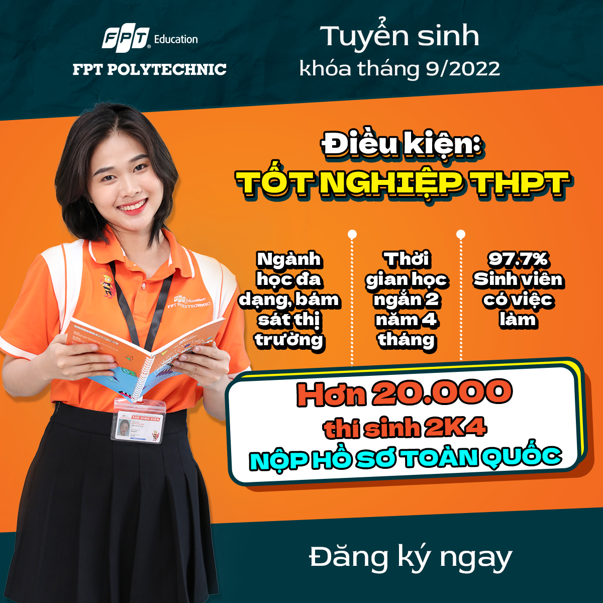

TRƯỜNG CAO ĐẲNG THỰC HÀNH FPT
Trường Cao đẳng FPT Polytechnic (Tên gọi khác: FPT Polytechnic & FPoly) là trường đào tạo trong lòng doanh nghiệp, xuất phát từ Tập đoàn FPT, đào tạo sinh viên với triết lý "Thực học - Thực nghiệp". Trường hiện có 8 cơ sở tại 6 tỉnh, thành phố, gồm: Hà Nội, Hải Phòng, Đà Nẵng, TP Hồ Chí Minh, Cần Thơ và Tây Nguyên. Trải qua hơn 10 năm hình thành và phát triển, FPT Polytechnic đã khẳng định vị trí của mình trên bản đồ giáo dục tại Việt Nam, mở ra cánh cửa nghề nghiệp cho hàng chục nghìn sinh viên Việt Nam.
LỊCH SỬ HÌNH THÀNH VÀ PHÁT TRIỂN
Năm 2008, Luật dạy nghề lần đầu tiên cho phép đào tạo nghề trình độ Cao đẳng cùng các quy định hướng dẫn dần hoàn thiện đã cho phép các trường Đại học được dạy Cao đẳng nghề và chịu sự quản lý của Bộ Lao động - Thương bình & Xã hội. Với quyết tâm triển khai phương thức đào tạo hệ cao đẳng, năm 2010, FPT Polytechnic chính thức ra đời với mô hình đào tạo theo triết lý "Thực học - Thực nghiệp", mở ra xu hướng tiên phong trong đào tạo tinh gọn, thực tiễn. Với chiến lược "Go Mass" - Hướng tới đại chúng, ứng dụng tiến bộ của công nghệ vào quá trình giảng dạy như: Phương pháp Blended Learning, Hybrid-Learning... cùng hệ thống quản trị hiện đại AP, LMS, CRM, FPT Polytechnic nhanh chóng cho thấy vai trò quan trọng trong hoạt động đào tạo, cung ứng nguồn nhân lực phù hợp với nhu cầu thực tế của thị trường.

ĐÀO TẠO CHUYÊN NGÀNH VÀ PHÁT TRIỂN CHUYÊN NGÀNH
Ngành Công nghệ thông tin:
- Chuyên ngành Phát triển phần mềm
- Chuyên ngành Ứng dụng phần mềm
- Chuyên ngành Lập trình Web
- Chuyên ngành Lập trình Mobile
- Chuyên ngành Xử lý dữ liệu
Ngành Quản trị kinh doanh:
- Chuyên ngành Digital Marketing - Thương mại điện tử
- Chuyên ngành Marketing & Sales
- Chuyên ngành Quan hệ công chúng (PR) & Tổ chức sự kiện
- Chuyên ngành Quản trị khách sạn
- Chuyên ngành Quản trị nhà hàng (dự kiến)
- Chuyên ngành Logistics

Ngành Công nghệ Kỹ thuật điều khiển & tự động hoá:
- Chuyên ngành Công nghệ kỹ thuật điện, điện tử
- Chuyên ngành Điện công nghiệp
- Chuyên ngành Công nghệ kỹ thuật điều khiển & tự động hoá

Ngành Thiết kế đồ hoạ:
Ngành Hướng dẫn du lịch:
Ngành Công nghệ kỹ thuật cơ khí:
Hệ thống đào tạo thẩm mỹ quốc tế Poly K-Beauty (Chăm sóc sức khoẻ & làm đẹp):
- Chuyên ngành Chăm sóc da & Spa
- Chuyên ngành Trang điểm nghệ thuật
- Chuyên ngành Phun thêu thẩm mỹ
- Chuyên ngành Công nghệ móng
HỆ THỐNG CÁC CƠ SỞ CỦA FPT POLYTECHNIC TRÊN TOÀN QUỐC
Hà Nội:
Địa chỉ: Tòa nhà FPT Polytechnic, đường Trịnh Văn Bô, Phương Canh, Nam Từ Liêm
Hải Phòng:
Địa chỉ: 271 Lê Thánh Tông, phường Máy Chai, quận Ngô Quyền, Thành phố Hải Phòng
Đà Nẵng:
Địa chỉ: 137 Nguyễn Thị Thập, phường Hòa Minh, quận Liên Chiểu
Thành phố Hồ Chí Minh:
778/B1 đường Nguyễn Kiệm, phường 4, quận Phú Nhuận
Toà nhà Innovation, lô 24, Công viên phần mềm Quang Trung, quận 12
391A đường Nam Kỳ Khởi Nghĩa, phường Võ Thị Sáu, quận 3
Tây Nguyên:
Địa chỉ: Tổ dân phố 8, phường Tân An, Buôn Ma Thuột, tỉnh Đắk Lắk
Cần Thơ:
Toà nhà A2, đường Quang Trung, phường Hưng Phú, quận Cái Răng
Số 288, đường Nguyễn Văn Linh, phường An Khánh, quận Ninh Kiều